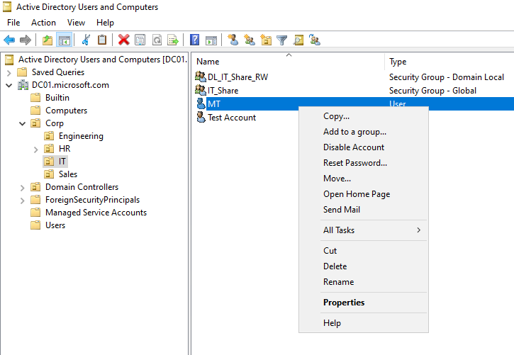
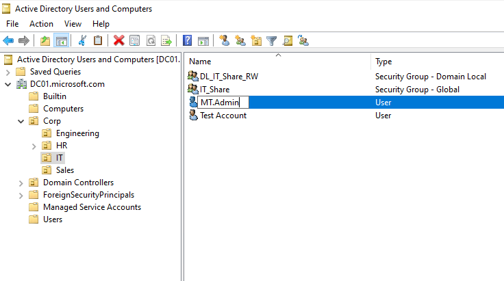
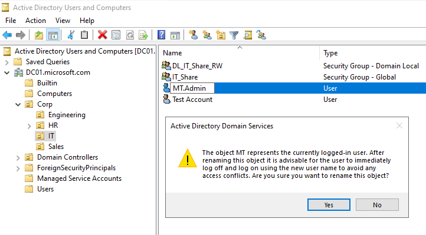
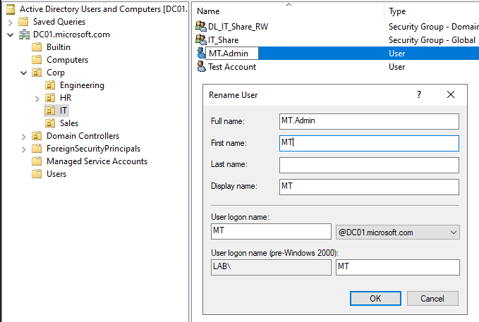
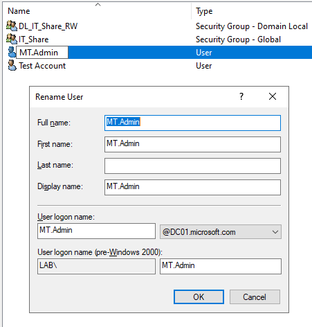
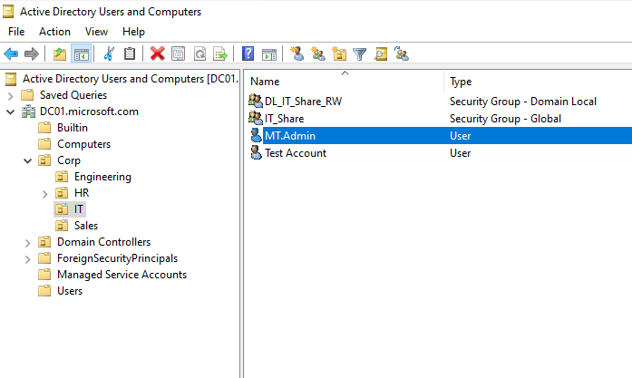
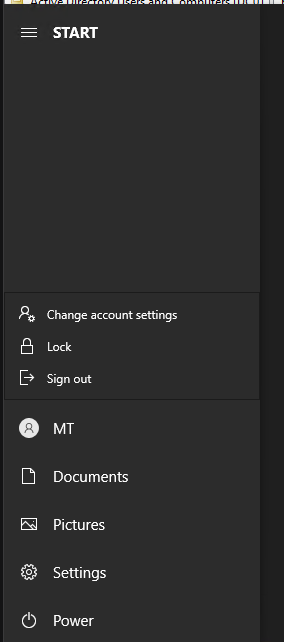

Active Directory – Blog Part IV: Security Hardening
Active Directory can be looked at differently between IT operations, Systems Administration, or Cybersecurity. It's one of those systems that has historically shaped domain management on corporate networks, has continued to keep environments productive and running, and is a complex hierarchical system, identity gatekeeper, and an imperative system to not only properly maintain administratively, but securely as well.
An out-of-the-box installation of the AD DS (Active Directory Domain Services) server role on a given Windows Server operating system has a lot of set default configurations that leave open a handful of security loopholes.
These loopholes leave the door open for more achievable brute-force success, accounts with more privileges than needed, weaker password policies, greater potential for successful downgrade attacks, relay attacks, and basic recon through anonymous enumeration, among other settings that increase the overall attack surface on a default setup.
In this write-up, I go through a layered security approach I put together right after installing the AD DS server role and promoting the Windows Server VM into a domain controller.
The layered approach is as follows:
- 1 Identity and Access Hardening – Application of Least Privilege
- 2 Implementing a Strong Password Policy
- 3 Group Policy Security Hardening
- 4 Auditing and Visibility
- 5 Attack Surface Reduction
- 6 Tiered Admin Model Applied
1 – Identity and Access Hardening: Application of Least Privilege
To start things off, I'm going to create a separate administrative account to manage this domain controller with, instead of using the built-in Administrator account.

Below, the built-in Administrator account is right-clicked to access its options, then disabled. The confirmation dialog confirms the account has been successfully disabled.


Here I'm verifying that the Guest account is disabled. It usually is by default, and it is, as indicated by the "Enable account" option appearing when right-clicking on it.

Here, I have my separate administrative account as a member of the Domain Admins group to be able to carry out administrative tasks with this account on the domain.

Next, I'm going to rename my admin account from MT to MT.Admin, then create a non-privileged standard user account called MT.User.







In this example, I have an OU called Corp with a child OU called Users for the standard user accounts on the domain. Here I'm creating a standard user account called MT.User to avoid using my MT.Admin account as a standard login account, configuring a general production account with the concept of least privilege.


2 – Implementing a Strong Password Policy
You can't go over AD Security Hardening without covering the implementation of a strong password policy for an AD deployment.
This is something that is set within the Group Policy Manager, under the Computer Configuration hierarchy of the Group Policy Management Editor.
Group Policy Management can be found under Server Manager > Tools:


To access the Group Policy Management Editor, right-click where it says Default Domain Policy, then select Edit.


Under Computer Configuration, I'm going to expand the hierarchical structure to:
Computer Configuration > Windows Settings > Security Settings > Account Policies > Password Policy


Here is where a password policy is specified. There are a few different policies that can be applied and enforced for account passwords on the domain accounts.
In this example, I'm going to set the:
- Maximum password age – 60 days
- Minimum password length – 12 characters


Another thing that can be set under the Account Policies is the Account Lockout Policy.


I'm going to set the Account lockout threshold to 5 invalid logon attempts to lock out a given domain account.

I'll set the Account lockout duration and Reset account lockout counter after to 30 minutes.


Then I'll open an elevated PowerShell session to push out these new domain changes.


To test out these configuration changes, I'm going to purposely lock out my MT.User account.


Both this Password Policy and Account Lockout Policy demonstrated apply domain wide. Prior to Windows Server 2008, a domain could only have one single password policy defined in the Default Domain Policy. FGPP (Fine-Grained Password Policies) were then introduced as a feature in Active Directory to allow different password and account lockout policies to be applied to different sets of users within the same domain.
FGPP's design gets around this limitation by using two specific object types in the Active Directory schema:
- Password Settings Objects (PSOs): This is where the actual policy settings are defined, such as minimum password length, complexity requirements, lockout thresholds, and password history. Multiple PSOs can be created, each with different distinctive settings.
- Password Assignment: You can link a PSO to specific user accounts or Global Security Groups.
- Enforce "High-Security" PSOs for members of groups like Domain Admins or Enterprise Admins.
- Enforce "Standard User" PSOs for general staff.
- Enforce "Service-Account" PSOs (often with longer, randomized, non-expiring passwords) for automated processes.
Applying a Fine-Grained Password Policy (FGPP)
Creating a new Fine-Grained Password Policy using PowerShell.


In this example, I'm setting the Precedence to 1. This is considered the rule that wins against everything else. It tells Active Directory which policy to apply when a user is assigned to multiple groups that have different password requirements, essentially locking in the FGPP policy as the absolute authority for anyone in that group.


The PSO can be found in Active Directory Administrative Center, under the System container in the Password Settings Container.


3 – Group Policy Security Hardening
Within the Group Policy Management Editor, navigating to:
Computer Configuration > Policies > Windows Settings > Security Settings > Local Policies > Security Options

Network security: LAN Manager authentication level


Microsoft network client: Digitally sign communications (always)


Network access: Do not allow anonymous enumeration of SAM accounts
Enabling these policies to disallow anonymous enumeration makes it really difficult to use tools such as enum4linux, smbclient, or rpcclient to enumerate server detail information, making it extremely difficult to retrieve system details in the event of active reconnaissance during a pentest or cyberattack.


Network access: Do not allow anonymous enumeration of SAM accounts and shares


Network access: Let Everyone permissions apply to anonymous users


Putting These Security Settings to the Test
To further test these security settings, I'm going to install the following tools on my Ubuntu server VM to carry out some active reconnaissance on the domain controller.
- enum4linux
- smbclient
- rpcclient
- nmap
Run Updates on Ubuntu Server VM


Install enum4linux


Install smbclient


Install rpcclient


Install nmap

Verification

Attempting Active Recon on the Domain Controller
enum4linux


smbclient

rpcclient


nmap


Active Directory is a trademark of Microsoft Corporation. This content is for educational purposes and is not affiliated with or endorsed by Microsoft.